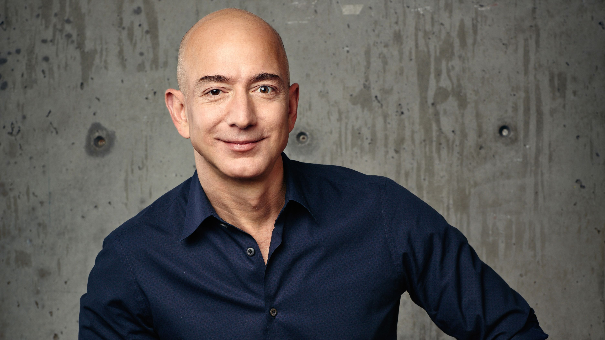

Jeffrey Preston Bezos (born January 12, 1964) is an American entrepreneur, media proprietor, investor, computer engineer, and commercial astronaut. He is the founder and executive chairman of Amazon, where he previously served as the president and CEO. With a net worth of around US$176 billion as of February 2022, Bezos is the second-wealthiest person in the world according to Bloomberg's Billionaires Index and third-wealthiest person according to Forbes.
Early Life
Jeffrey Preston Jorgensen was born in Albuquerque, New Mexico, on January 12, 1964, the son of Jacklyn (née Gise) and Theodore Jorgensen. At the time of Jeffrey's birth, his mother was a 17-year-old high school student and his father was 19 years old. After his parents divorced, his mother married Cuban immigrant Miguel "Mike" Bezos in April 1968. Shortly after the wedding, Mike adopted four-year-old Jeffrey, whose surname was then legally changed from Jorgensen to Bezos.
Jeff Bezos attended a Montessori school in Albuquerque, New Mexico, when he was two years old. Jeff Bezos attended River Oaks Elementary School in Houston from fourth to sixth grade. The family moved to Miami, Florida, where Bezos attended Miami Palmetto High School.
Bezos attended the Student Science Training Program at the University of Florida. He was high school valedictorian, a National Merit Scholar, and a Silver Knight Award winner in 1982. In his graduation speech, Bezos told the audience he dreamed of the day when mankind would colonize space. A local newspaper quoted his intention "to get all people off the earth and see it turned into a huge national park". In 1986, he graduated summa cum laude from Princeton University with a 4.2 GPA and a Bachelor of Science in Engineering degree (B.S.E.) in electrical engineering and computer science; he was also a member of Phi Beta Kappa.[39][40] While at Princeton, Bezos was a member of the Quadrangle Club, one of Princeton's 11 eating clubs. In addition, he was elected to Tau Beta Pi and was the president of the Princeton chapter of the Students for the Exploration and Development of Space (SEDS).
Business Career
After Bezos graduated from college in 1986, he worked at Fitel, a fintech telecommunications start-up, where he was tasked with building a network for international trade. He transitioned into the banking industry when he became a product manager at Bankers Trust. He worked there from 1988 to 1990. He then joined D. E. Shaw & Co, a newly founded hedge fund with a strong emphasis on mathematical modelling in 1990 and worked there until 1994. Bezos became D. E. Shaw's fourth senior vice-president at age 30.
In late 1993, Bezos decided to establish an online bookstore. Bezos initially named his new company Cadabra but later changed the name to Amazon after the Amazon River in South America, in part because the name begins with the letter A, which is at the beginning of the alphabet.[51] At the time, website listings were alphabetized, so a name starting with "A" would appear sooner when customers conducted online searches.[52] In addition, he regarded "Amazon," the name of the world's largest river as fitting for what he hoped would become the world's largest online bookstore. Although Amazon was originally an online bookstore, Bezos had always planned to expand to other products. Bezos maintained that the growth of the Internet would overtake competition from larger book retailers such as Borders and Barnes & Noble.
In 1998, Bezos diversified into the online sale of music and video, and by the end of the year he had expanded the company's products to include a variety of other consumer goods. In 2002, Bezos led Amazon to launch Amazon Web Services, which compiled data from weather channels and website traffic. In October of 2013, Amazon was recognized as the largest online shopping retailer in the world. On February 1, 2018, Amazon reported its highest ever profit with quarterly earnings of $2 billion.
In February 2021, Bezos announced that in the third quarter of 2021 he would step down from his role as CEO of Amazon, to become the Executive Chairman of the Amazon Board. He will be replaced as CEO by Andy Jassy. In his final letter to Amazon shareholders, Bezos quoted geneticist Richard Dawkins: "Staving off death is a thing that you have to work at... If living things don't actively work to prevent it, they would eventually merge with their surroundings and cease to exist as autonomous beings. That is what happens when they die."
Recognition
In 1999, Bezos received his first major award when Time named him Person of the Year.
In 2008, he was selected by U.S. News & World Report as one of America's best leaders.
Bezos was awarded an honorary doctorate in science and technology from Carnegie Mellon University in 2008.
In 2011, The Economist gave Bezos and Gregg Zehr an Innovation Award for the Amazon Kindle.
In 2012, Bezos was named Businessperson of the Year by Fortune.
He is also a member of the Bilderberg Group and attended the 2011 Bilderberg conference in St. Moritz, Switzerland,[178] and the 2013 conference in Watford, Hertfordshire, England. He was a member of the executive committee of The Business Council for 2011 and 2012
2014–2018, he was ranked the best-performing CEO in the world by Harvard Business Review.
He has also figured in Fortune's list of 50 great leaders of the world for three straight years, topping the list in 2015.
In September 2016, Bezos received a $250,000 prize for winning the Heinlein Prize for Advances in Space Commercialization, which he donated to the Students for the Exploration and Development of Space.
In February 2018, Bezos was elected to the National Academy of Engineering for "leadership and innovation in space exploration, autonomous systems, and building a commercial pathway for human space flight".
In March 2018, at the Explorers Club annual dinner, he was awarded the Buzz Aldrin Space Exploration Award in recognition of his work with Blue Origin.
He received Germany's 2018 Axel Springer Award for Business Innovation and Social Responsibility.[183] Time magazine named him one of the 100 most influential people in the world on five separate occasions between 2008 and 2018.
Wealth
Bezos first became a millionaire in 1997 after raising $54 million through Amazon's initial public offering (IPO). He was first included on the Forbes World's Billionaires list in 1999 with a registered net worth of $10.1 billion. When the 2017 list was issued, Bezos's net worth was registered at $72.8 billion, adding $27.6 billion from the previous year. Bezos was officially ranked as the third wealthiest person in the world up from the 5th spot in 2016. On March 6, 2018, Bezos was designated the wealthiest person in the world with a registered net worth of $112 billion.
Philantropy
Bezos donated to the Fred Hutchinson Cancer Research Center several times between 2009 and 2017. In 2013, he pledged $500,000 to Worldreader, a non-profit founded by a former Amazon employee. In May 2017, Bezos gave $1 million to the Reporters Committee for Freedom of the Press, which provides pro bono legal services for American journalists. Bezos announced in September 2018 that he would commit approximately $2 billion to a fund to deal with American homelessness and establish a network of non-profit preschools for low income communities.
In February 2020, Bezos pledged $10 billion to combat climate change through the Bezos Earth Fund. Later that year, in November, Bezos announced $791M of donations to established, well-known groups, with $100M each going to Environmental Defense Fund, Natural Resources Defense Council, The Nature Conservancy, World Resources Institute and World Wildlife Fund, and the remainder going to 11 other groups. In April 2020, early in the COVID-19 pandemic, Bezos donated $100 million to food banks through Feeding America. In November 2021, Bezos pledged to donate $2 billion towards restructuring food systems and nature conservation at the 2021 United Nations Climate Change Conference.